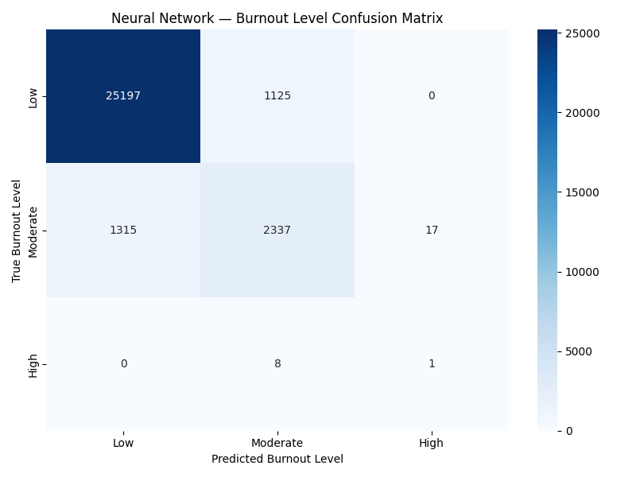
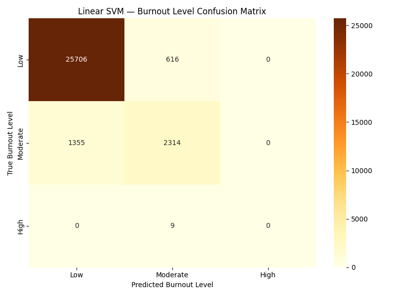
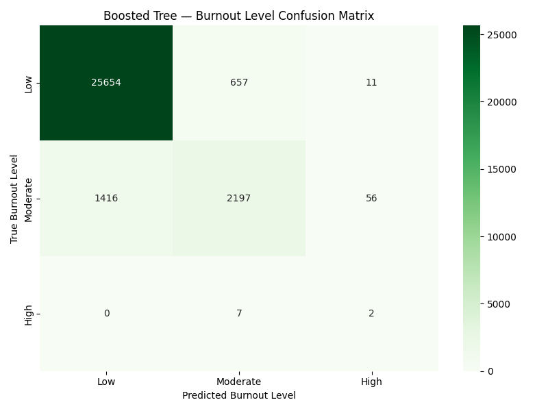
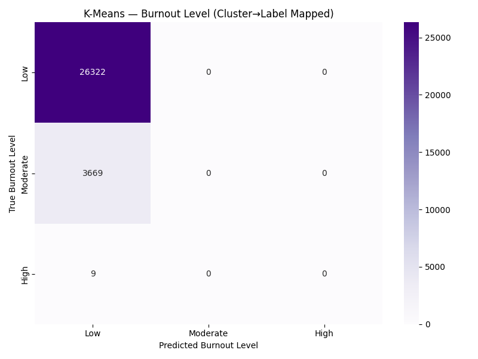
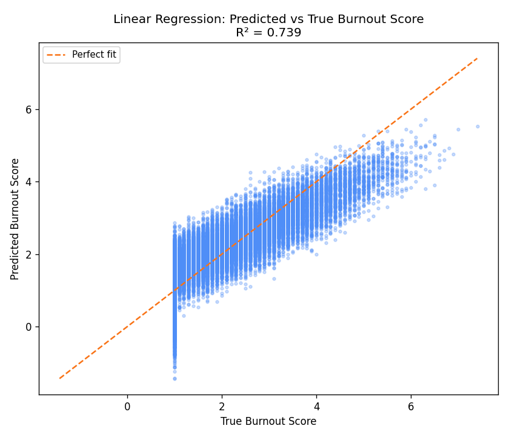
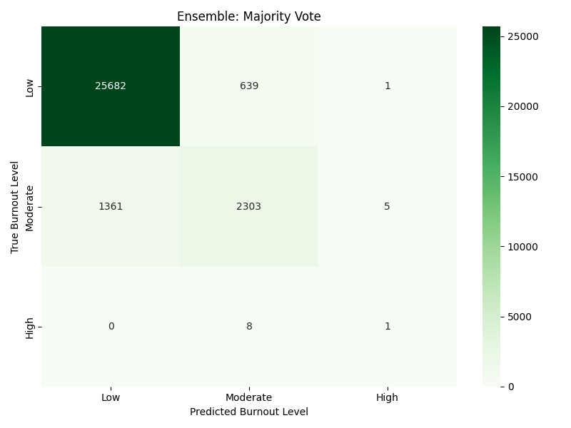
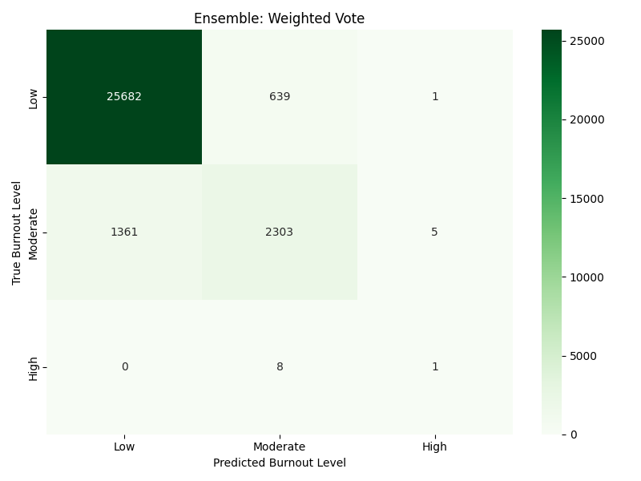
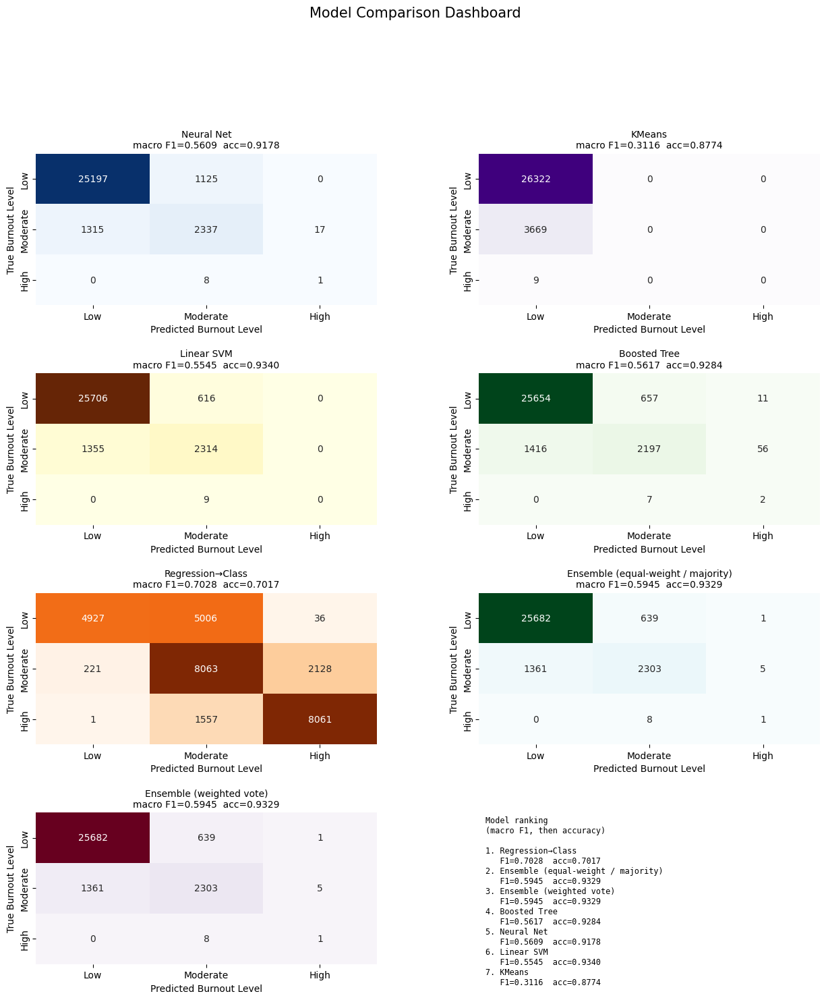

We trained and compared five different machine learning models — Neural Network, Linear SVM, Gradient Boosted Trees, K-Means Clustering, and Linear Regression — on a 150,000-employee tech-industry mental health dataset to find out which approach best predicts burnout level and what the data can actually tell us.
What are we trying to predict, and why does it matter?
Burnout is a state of chronic workplace stress that leads to physical and emotional exhaustion, cynicism, and reduced effectiveness. It is a leading driver of employee turnover, healthcare costs, and lost productivity — especially in the tech industry, where long hours and high pressure are common. Early identification allows organizations to intervene before burnout becomes severe.
This is a classification problem: given input features, predict which category (Low / Moderate / High) a sample belongs to. We also run a regression task: predicting the raw continuous burnout score. Both tasks let us understand the data from different angles. We compare five approaches to see which family of model handles this data best — and to understand why.
We use the Employee Mental Health and Burnout Dataset from Kaggle, containing 150,001 rows and 25 columns. Each row represents one employee and their self-reported or measured attributes.
work_hours > 168/weekburnout_score when predicting levelHow the experiment works: from raw data to trained models to comparison results.
Different model families make fundamentally different assumptions about how the data is structured. By comparing all five, we learn not just what performs best, but why — for example, if a simple linear model matches a deep network, the data's patterns are likely linear. If clustering fails completely, the burnout classes don't form natural geometric groups.
Every supervised classifier uses the exact same train/test split
(random seed 42, 80/20). This is critical: if models used different data, you couldn't fairly compare their
results. The preprocessing pipeline is shared via a common data_cleaning.py
module run once and saved as a bundle.
Understanding what we're measuring is essential for interpreting the results.
Five model architectures, each evaluated on the same 30,000-employee test set. The confusion matrix for each shows which burnout levels were correctly predicted (diagonal) and where errors occurred (off-diagonal). Rows = true label, columns = predicted label.
MLPClassifier · 2 hidden layers (64, 32 neurons)

LinearSVC · max_iter=5000 · Best classifier

HistGradientBoostingClassifier · max_iter=200

Unsupervised baseline · k=3 · n_init=20

Predicts continuous burnout_score, not the class label

Head-to-head metrics for all five approaches on the same 30,000-row test set. The bar chart focuses on the three supervised classifiers since K-Means and Regression use fundamentally different metrics.
Supervised classifiers only — K-Means and Regression are excluded because they don't produce classification accuracy in the same way. Y-axis starts at 88% to make differences visible (all models are within ~2% of each other).
| Model | Type | Accuracy | Precision (W) | Recall (W) | F1 (W) | Other |
|---|---|---|---|---|---|---|
| Linear SVM | Classifier | 93.40% | 92.98% | 93.40% | 93.07% | — |
| Boosted Tree | Classifier | 92.84% | 92.54% | 92.84% | 92.55% | — |
| Neural Network | Classifier | 91.78% | 91.63% | 91.78% | 91.70% | — |
| K-Means | Clustering | — | 76.98% | 87.74% | 82.01% | ARI 0.076 · NMI 0.149 · Sil 0.045 |
| Linear Regression | Regression | — | — | — | — | R² 73.94% · MAE 0.453 · RMSE 0.569 |
An ensemble combines the predictions of multiple models, hoping that their errors are uncorrelated — so where one model is wrong, another is right. We test two voting strategies combining NN, SVM, Boosted Tree, and the binned Regression predictions. K-Means is excluded because its cluster quality is too poor to add signal.
For each employee in the test set, each of the four models independently casts a "vote" for the burnout level (Low, Moderate, or High). The final prediction is whichever class gets the most votes. Ties are broken by choosing the lower class index (Low preferred over Moderate, Moderate over High) — a conservative choice.
In equal-weight voting each model gets 1 vote. In weighted voting, each model's vote carries a weight proportional to its test-set macro F1 score — better models have louder voices. In practice, both strategies produced identical results here because the weight differences were small enough to not change any majority decisions.
Equal-Weight Vote — Confusion Matrix

Weighted Vote — Confusion Matrix

All seven confusion matrices side-by-side with a model ranking panel. Click to enlarge. Each matrix shows Low / Moderate / High on both axes. Rows are the true burnout level; columns are what each model predicted. Numbers on the diagonal are correct predictions.

What we learned from training and comparing all five approaches on 150,000 employee records.